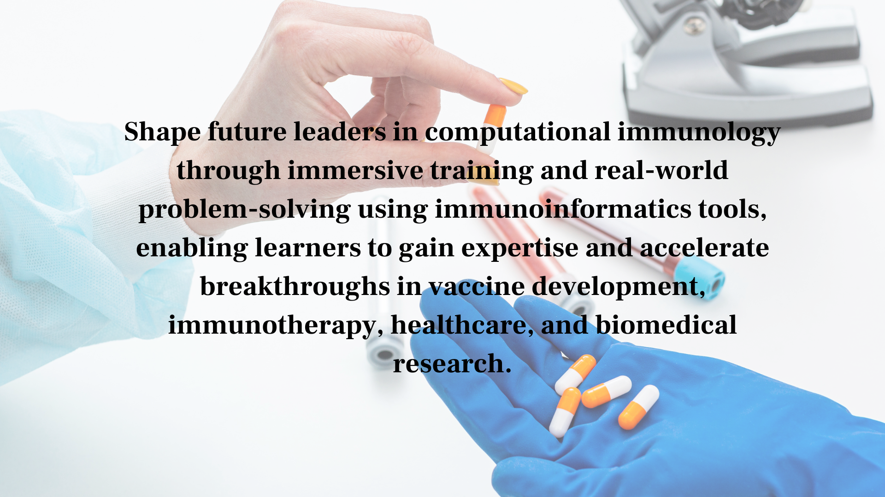

Immunoinformatics Tools : Computational Methods for Vaccine and Immunotherapy Design
The immune system is extraordinarily complex, involving hundreds of cell types, thousands of proteins, and intricate signaling networks that coordinate responses to pathogens and disease. Immunoinformatics tools apply computational methods to understand immune system biology and design interventions that harness or modulate immune responses. Immunoinformatics tools are transforming vaccine development, cancer immunotherapy, and autoimmune disease research by enabling faster and more rational design of immune-targeting therapeutics.
From epitope prediction and MHC binding analysis to immune cell population modeling and antibody design, immunoinformatics tools cover the full spectrum of computational immunology. The growing availability of large immunological datasets and advances in machine learning have dramatically improved the accuracy and scope of immunoinformatics tools in recent years.

Immunoinformatics Tools : Computational Methods for Vaccine and Immunotherapy Design
Table of Contents
What Are Immunoinformatics Tools?
Immunoinformatics Tools are computational software platforms that analyze immunological data and apply bioinformatics methods to understand immune system function and design immune-targeting therapeutics. These tools include epitope prediction software that identifies T cell and B cell epitopes from protein sequences, MHC binding affinity predictors, immune cell deconvolution tools that infer cell type composition from transcriptomic data, and antibody design platforms. Immunoinformatics Tools integrate immunological databases such as IEDB, IMGT, and UniProt to provide biological context for computational analyses, helping researchers uncover critical insights into immune responses and disease mechanisms.
Modern Immunoinformatics Tools combine computational immunology, machine learning, artificial intelligence, and advanced bioinformatics techniques to process vast amounts of biological and immunological data. These platforms support vaccine design software, immune repertoire analysis, antigen discovery, immune system modeling, and antibody engineering by enabling researchers to predict immune interactions with greater accuracy and efficiency. By integrating genomics, proteomics, transcriptomics, and multi-omics datasets, Immunoinformatics Tools provide a comprehensive framework for studying host-pathogen interactions, identifying therapeutic targets, and accelerating the development of next-generation immunotherapies.
As healthcare and life sciences become increasingly data-driven, Immunoinformatics Tools play a crucial role in advancing precision medicine and personalized healthcare. Researchers use these tools to evaluate vaccine candidates, predict immunogenicity, analyze immune cell populations, and identify biomarkers associated with disease progression and treatment response. The ability of Immunoinformatics Tools to automate complex analyses and generate actionable insights has made them indispensable resources in academic research, biotechnology companies, pharmaceutical organizations, and clinical immunology programs worldwide.
- Epitope prediction for T cell and B cell targets
- MHC binding affinity and presentation prediction
- Immune cell population deconvolution from omics data
- Antibody sequence analysis and design tools
Applications of Immunoinformatics Tools
Immunoinformatics Tools are widely applied across vaccine development, cancer immunotherapy, infectious disease research, autoimmune disease studies, and transplant immunology. These advanced computational immunology platforms enable researchers to analyze complex immune system interactions, predict immune responses, and identify potential therapeutic targets using large-scale biological datasets. By integrating genomics, proteomics, transcriptomics, and immunological databases, Immunoinformatics Tools help scientists accelerate the discovery of vaccines and immune-based therapies while reducing reliance on time-consuming experimental screening.
One of the most significant applications of Immunoinformatics Tools is vaccine design, where researchers use epitope prediction tools and MHC binding analysis software to identify highly immunogenic regions of pathogens. These tools support the development of vaccines against viral, bacterial, and parasitic diseases by predicting which antigens are most likely to trigger protective immune responses. In cancer immunotherapy, Immunoinformatics Tools are used to identify tumor-specific neoantigens from genomic sequencing data, enabling the creation of personalized cancer vaccines and targeted immunotherapies that improve patient outcomes. Furthermore, these platforms support infectious disease surveillance, immune repertoire analysis, and biomarker discovery, making them valuable assets for both academic researchers and pharmaceutical organizations.
- Vaccine antigen and epitope design
- Cancer neoantigen identification for personalized immunotherapy
- Autoimmune epitope mapping and tolerance research
- HLA matching and transplant rejection prediction
Immunoinformatics Tools : Computational Methods for Vaccine and Immunotherapy Design
Benefits of Immunoinformatics Tools
Immunoinformatics Tools dramatically reduce the time and cost associated with identifying immune targets by enabling researchers to computationally screen thousands of peptide sequences, antigens, and immune biomarkers before initiating laboratory experiments. Traditional immunology workflows often require extensive laboratory validation, which can be resource-intensive and time-consuming. By leveraging computational immunology, machine learning, and bioinformatics techniques, Immunoinformatics Tools allow scientists to rapidly prioritize the most promising candidates for further testing and development.
Another major advantage of Immunoinformatics Tools is their ability to support rational vaccine design and precision immunotherapy development. Researchers can use these platforms to predict immunogenicity, optimize antigen selection, evaluate immune escape mechanisms, and identify biomarkers associated with treatment response. Immunoinformatics Tools also contribute to autoimmune disease research by identifying self-reactive epitopes and uncovering the molecular pathways involved in inflammatory disorders. These capabilities improve decision-making, accelerate therapeutic discovery, and increase the likelihood of successful clinical outcomes while reducing overall research and development costs.
- Faster immune target identification before laboratory work
- Rational vaccine design with predicted broad coverage
- Immunotherapy design guided by computational epitope analysis
- Immunosuppressive therapy design for autoimmune conditions
Future of Immunoinformatics Tools
The future of Immunoinformatics Tools is being driven by rapid advancements in artificial intelligence, deep learning, single-cell sequencing technologies, and systems immunology. Next-generation Immunoinformatics Tools will be capable of analyzing increasingly complex immune datasets to provide highly accurate predictions of immune responses, vaccine efficacy, and therapeutic outcomes. Deep learning models trained on massive immunological databases will improve epitope prediction accuracy, MHC binding analysis, immune system modeling, and antibody engineering, enabling researchers to design more effective vaccines and immunotherapies than ever before.
Future Immunoinformatics Tools are expected to play a central role in personalized medicine by enabling the development of patient-specific vaccines, individualized immunotherapies, and precision healthcare solutions. Integration with cloud computing platforms, laboratory automation systems, multi-omics analytics, and real-time biological data streams will create intelligent research ecosystems that continuously learn from new experimental results. As computational immunology continues to evolve, Immunoinformatics Tools will transform vaccine discovery, cancer treatment, infectious disease management, and immune system research, helping scientists address some of the world's most challenging healthcare problems while accelerating biomedical innovation.
- Deep learning for improved epitope and MHC prediction
- Single-cell immune profiling analysis tools
- Personalized vaccine design from individual immune data
- AI-driven neoantigen therapy optimization